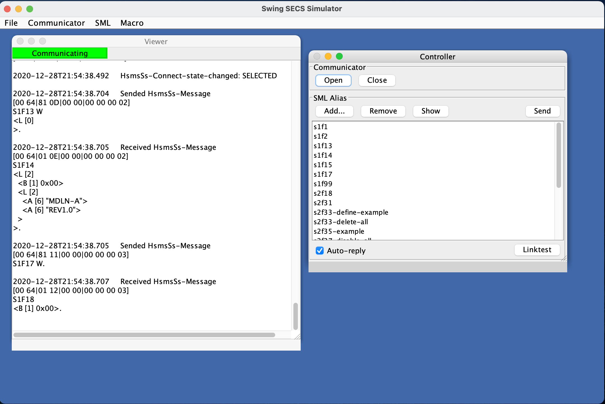

SECS-Simulator

This is SEMI-SECS-Simulator Java application. Works with Java8 or later.
github repository
Download (Swing version)
SwingSecsSimulator.jar
Run Application
java -jar SwingSecsSimulator.jar
Set config (protocol, IP-address, device-id, timeout, ...)
[File] → [Set Config...]
Open Communicator
Has 2 ways
- [File] → [Open Communicator]
- Click "Open" button in "Control" frame.
If already opened, Closing Communicator and re-open.
Send SML
Direct write SML and send
- [SML] → [Show SML Editor]
- Write SML.
- Click "Send" button.
Load SML file and send
- [SML] → [Add SML...], or click "Add..." button in "Control" frame.
- Choose SML file(s).
- Select SML, Click "Send" button in "Coltrol" frame.
Download and see SML-template
Save/Load config
- Save: [File] → [Save Config...]
- Load: [File] → [Load Config...]
Config file format is JSON(RFC 8259), editable directly.
Command-Line Arguments
Load-config
java -jar SwingSecsSimulator.jar --config /path/of/config.json
Auto-open
java -jar SwingSecsSimulator.jar --auto-open true
Auto-logging
java -jar SwingSecsSimulator.jar --auto-logging /path/to/log.log
CLI version
Download, How to use